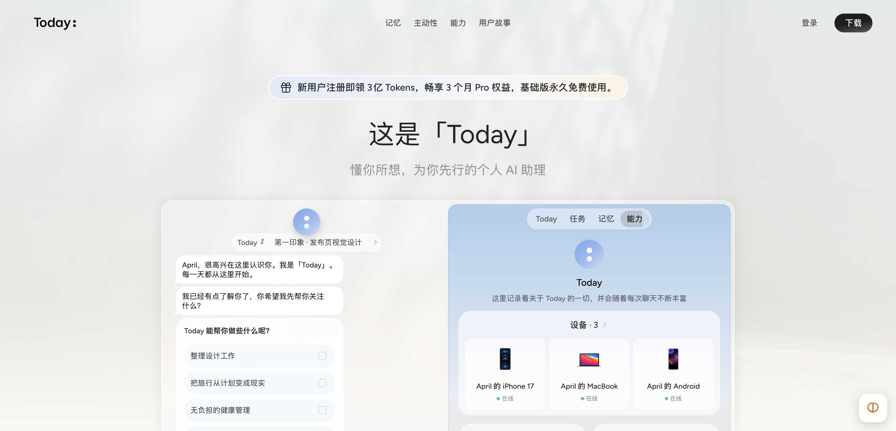
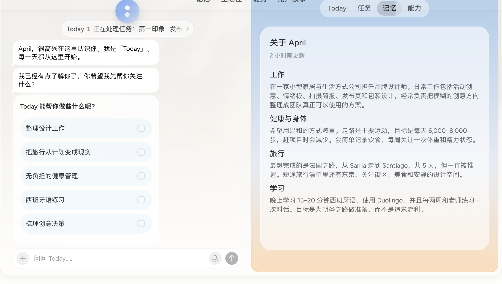
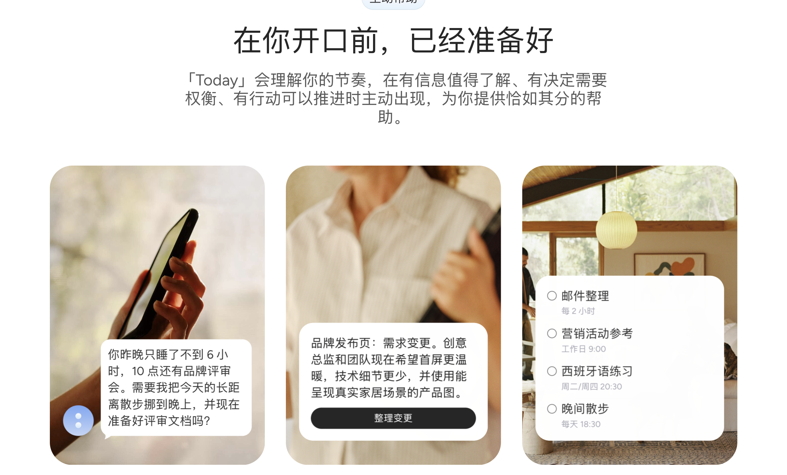
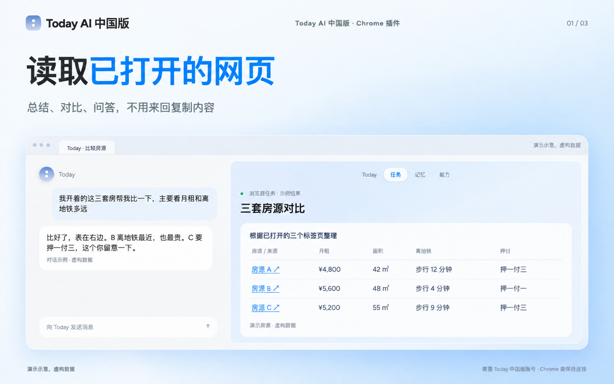
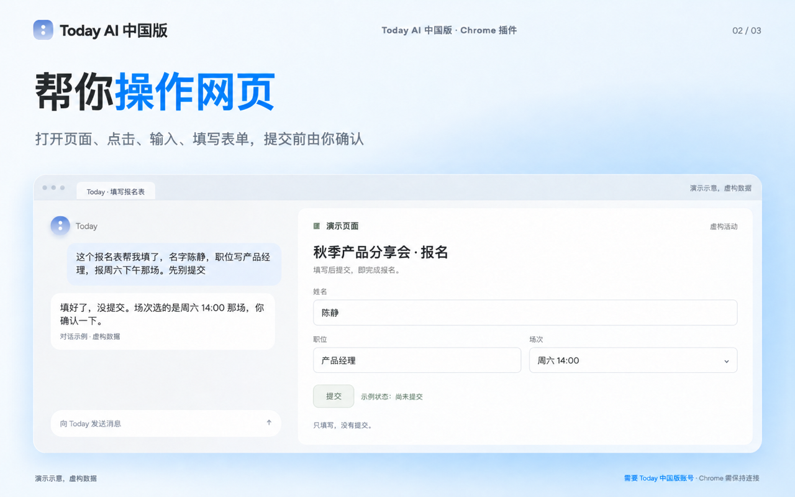
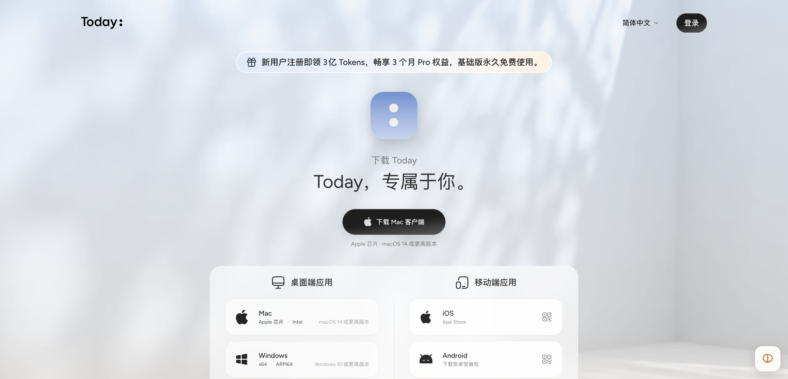
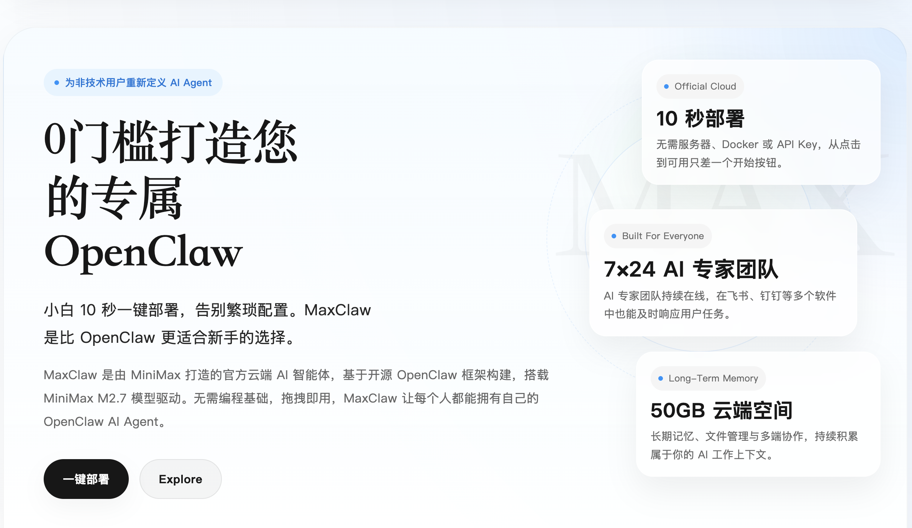

又一个 AI 助理，为什么还值得装？
这个问题，Today 大概绕不过去。能写文章、查资料、做计划的工具，我们已经认识不少。再给一个聊天框，再列一串模型名字，很难解释用户为什么要重新注册账号、连接应用，还要花时间让它了解自己。
Today 国内官网给出的回答，从第一屏就有点不同。它先问你希望它关注什么：设计工作、旅行、健康管理、语言练习，或是还没想清楚的创意。旁边展示的也不只是聊天记录，还有晨间简报、正在推进的任务，以及关于用户的记忆。它希望你交代的，似乎是接下来一段时间里值得操心的事。

图 1｜Today 国内官网。页面里的对话、人物与任务是官方演示，本文未将其作为实测结果。
这也是从国内 Personal Agent 的角度认识 Today，最有意思的入口：当 AI 已经能处理不少单次任务，一个独立产品准备凭什么参与用户的日常？Today 选择把记忆、主动帮助和执行放在一起，尝试接手那些不会在一次对话里结束的工作。
它的选择还没有被证明就是更好的答案。不过，沿着公开的国内产品页面、下载渠道和浏览器插件看下去，已经能看出这条路线的轮廓：先让你有事愿意交代，再让这些背景在下一次工作中继续发挥作用，最后寻找进入实际软件的路径。
先接住那些不会一次结束的事
如果只看功能清单，Today 并不容易显得特别。搜索、文件处理、工具调用、云端电脑，都已经出现在不同 AI 产品里。记忆同样不是谁独占的能力。拿这些词逐项打钩，很容易把比较变成“大家都有”，或者挑一个细小功能，夸大成整个品类的分界。
真正能看出产品选择的，是它把什么放在使用过程的前面。Today 展示的典型用户，并非只在某个时刻需要一段答案的人。设计工作可能跨越几轮评审，旅行会从想法变成不断调整的安排，语言学习要重复很多天。它们共享一个特点：昨天的背景，会影响今天该做什么。
一个很小的例子就能说明差别。你让 AI 帮忙起草活动方案，它当场交出一份文档，这当然有用。但过了三天，预算缩小了，日期换了，负责人又发来新要求，之前那份方案就成了历史版本。接下来需要的是把变化带回原来的任务，重新安排工作，而不只是再写一份看上去完整的新稿。
这类工作里，用户承担着一项经常被低估的劳动：维护背景。哪份要求有效，哪条决定已经作废，什么不能改，什么只是临时设想，都需要有人记得。AI 每次表现得很聪明，却仍让用户负责把这些材料重新打包，使用者就依然是所有软件之间的人工接线员。
从产品经理的角度看，Today 是在尝试缩小这部分劳动。它面对的机会，不只来自某个任务做得更快，还来自任务之间能否少断几次。如果一次讨论产生的有效背景，可以被下一次计划使用，用户回来的理由就多了一层：这里已经保留着相关工作，不必从头组织。
但这也意味着，它更适合有持续事务的人。只想偶尔翻译一句话，或者临时找一个知识点，未必需要长期关系。Today 要说服的首先可能是同时处理项目、个人计划与零碎跟进的人：这些事单独看都不复杂，混在一起，却需要不断记住和切换。
这是一种有方向的取舍。面对所有人都能理解的日常主题，产品仍然需要从其中一部分高频、可延续的需求里，找到用户愿意反复回来的理由。
记住你，最好能落实到下一次工作
Today 官网的可交互演示中，有一页关于虚构用户 April 的记忆。它把工作、身体与健康、旅行、学习等背景放在一起：这个人做什么工作，怎样安排运动，准备去哪里，学语言又是为了什么。演示中的资料不是一串孤立标签，几件事之间存在关系。

图 2｜官网演示以 April 为例组织个人背景。它展示产品希望保留什么上下文，不代表真实账号的识别准确率。
这种关系，决定了记忆有没有机会派上用场。知道一个人“喜欢旅行”，能生成的内容相当宽泛；知道他正在为一段具体旅程准备，平时练习相关语言，时间又经常被工作挤掉，后续建议才有条件与已经发生的事衔接。
这里最难的部分，并非保存更多文本。用户在聊天时会试探，会反悔，也会讲别人的情况。如果把一次头脑风暴当成长期目标，把客户的偏好记成用户自己的偏好，后面越积极地使用这些资料，偏差可能越大。个人记忆需要处理的，既有“记下了什么”，也有“这些信息现在还对不对”。
Today 在官方介绍中强调记忆可以查看、修改和删除。这项设计与产品价值是直接相连的：当建议不符合实际，用户需要能找到原因并纠正。让产品知道自己换了工作、取消了旅行或调整了目标，应该像更新正在使用的资料，而非重新向一个无法解释的系统证明自己是谁。官方产品介绍
以工作项目为例，“这个方案被讨论过”和“这个方案已经通过”就不能混用。前者适合用于了解过程，后者才可能支撑接下来的行动。记忆越深入任务，越需要保留状态的差别。否则，节省的背景说明会在核对结果时重新花回来。
所以，评价这类产品时，单看它能不能复述用户信息还不够。更有意思的是下一次：背景改变后，它有没有跟上；重新打开旧任务时，它会不会把已解决的问题又摆回来；用户更正之后，这次修改能不能持续生效。记忆的价值要在后续工作中兑现。
这也解释了 Today 为什么没有只把自己描述成知识库。资料整理得很齐，不等于生活和工作因此更省心。它需要让被保存的背景进入计划、建议与任务，才能把“它知道我”变成一种可以感受到的使用收益。
主动帮助，先得有一件值得开口的事
官网另一组演示，把睡眠、当天的评审会和散步计划放在同一个建议里；旁边则是需求变更，以及邮件整理、活动参考等周期安排。这些画面试图说明：AI 可以在用户发出新指令之前，先把相关变化组织好。

图 3｜官网展示主动建议与周期任务的设想。健康相关内容属于生活方式场景，演示不能证明其判断准确或构成医疗建议。
定时任务和根据上下文提出建议，带来的体验并不相同。每天九点准备一份行业简报，重点是按约定完成；得知项目要求变了，再提醒用户需要调整材料，重点是识别变化与原有任务的关系。它们可以在同一个产品里共存，但不能都简单归为“AI 会主动”。
对用户而言，主动性的好处也不只是少输入一句话。你记得某件事，才会打开工具；有些真正需要帮助的时刻，恰好是你还没注意到变化。个人助理如果能提前准备相关资料，用户省下的可能包括查找、核对和重新安排的时间。
与此同时，主动开口会消耗注意力。一个建议即使没有错，也可能毫无必要：用户已经处理了，今天不准备做，或者这件事根本不值得单独提醒。频繁把“可能有帮助”当成“应该打断”，很容易让一个原本贴心的产品变成新的收件箱。
Today 的选择因此包含一个更难的要求：它既要知道什么值得关注，也要判断什么时候提出。用户想持续跟进一个项目，不等于愿意接收项目中的每条变化；计划学习一门语言，也不等于每天都需要 AI 重新劝一次。
实际体验中，这些差别可以落到很具体的反馈上。用户能否告诉它这类提醒以后不用再发，临时忙碌时能否调整节奏，任务已在其他地方完成时会不会继续催促。主动性要形成习惯，需要允许用户塑造它，而非让用户长期适应系统的热情。
这里也是长期记忆和主动帮助真正相遇的位置。记忆提供背景，当前信号带来变化，产品再决定有没有值得提出的下一步。如果记忆只用于让回复语气更亲近，主动功能又只是定时发一段内容，两项能力虽然同时存在，用户仍未必获得连续的帮助。
走出聊天框，浏览器是一个具体入口
认识国内 Personal Agent，绕不开一个现实问题：它能进入哪些软件？用户的事情可能散在邮件、文档、项目工具和浏览器里。产品再了解目标，拿不到相关材料、无法完成后续操作，也会停在给建议的阶段。
Today 国内官网介绍了连接器、云端电脑和社区 Skills。它们分别提供信息与操作入口、任务运行环境，以及可重复使用的工作方法。把这几类能力放在一起，方向是从一句请求往结果推进。不过，具体到国内用户，最容易核实的一项入口，反而是中国版 Chrome 插件。
Skills 还对应另一种积累：把做事的方法留下来。例如，一份周期简报需要固定比较维度、保留来源，并突出与上期相比的变化。用户不应每次都重新交代这套要求。把有效工作流复用起来，可以减少重复沟通，也让结果更容易保持一致。但技能写得好，不能代替工具权限或可靠来源；它安排的是如何工作，真正执行仍取决于当前环境。对个人助理而言，记住用户的背景与保留用户认可的方法，是两种可以互相配合的积累。
官方商店说明，插件能够把用户正在使用的 Chrome 连接到 Today 中国服务，在已登录的网站里读取页面、点击、输入和填写表单。它还可以在任务需要时查找浏览历史或书签。两个服务有各自的插件和账号会话，国内版不能直接切成国际版。中国版插件说明

图 4｜插件官方商店素材，用房源对比展示多网页读取。图中已标注“演示示意、虚构数据”，不是本文测试。
这个入口有实际的产品含义。设想你已经打开几份候选服务的报价，比较价格、条件与差异，过去常见的做法是复制材料，再到另一个窗口整理需求。能够读取现有页面，至少有机会减少材料搬运；如果还能完成相应操作，任务就有机会继续留在原来的工作环境中。
插件提供的官方演示里，还有填好报名表、等待用户确认的场景。它把“准备工作”和“最终提交”分开呈现，这比笼统地说 AI 会操作网页更容易理解：用户可以把重复填写交出去，同时保留最后确认的机会。

图 5｜官方表单操作示意，保留了尚未提交的状态。页面为虚构示例，不对应真实活动。
这里当然还有网站与权限的条件。插件说明要求任务期间保持 Chrome 运行、连接正常，涉及的网站也可能需要用户先登录。因此，官网提到的云端持续执行，与依赖本地浏览器的工作，应当分别理解。把电脑合上之后，后台研究能否继续、某个网页操作能否继续，是两个不同的问题。
浏览器入口也不能直接被等同于某个应用的深度连接。网页能被读取，不表示所有后台数据都能访问；能够填写表单，也不表示该网站的每种操作都稳定可用。它提供了一条进入现有软件的路径，具体能走多远，需要针对任务验证。
从国内使用环境看，这样的路径值得关注。一个独立助理不拥有用户工作的全部入口，连接能力需要一点点建立。浏览器让它有机会借用用户已经打开、已经登录的环境，减少重建工作现场的成本；用户也能围绕自己眼前的事情提出需求，而不必先学会按工具名称拆分任务。
国内版的意义，最终要落到可用范围
Today 目前提供了国内服务与国内下载入口。核查时，登录页面明确只支持中国大陆手机号；下载页列出了 Mac、Windows、Linux、iOS 和 Android 渠道。对想认识它的国内用户，这至少让“从哪里开始”有了清楚的路径。登录页、下载页

图 6｜国内下载页实截。2026 年 10 月 23 日页面展示新用户 3 亿 Tokens、3 个月 Pro 权益，以及基础版免费宣传；具体额度与权益以注册和购买页面为准。
这类产品的上手门槛，仍然不只是一笔订阅费用。安装客户端之后，用户还要决定先提供什么背景，连接哪些来源，交出去什么任务。如果第一天就需要整理完整的个人资料、授权许多应用，才有机会看到一次有用结果，理解产品的成本就会变得很高。
一个更容易成立的起点，是边做边积累。先完成一项确实要处理的工作，留下必要背景；下一次再处理相关事务时，感受到少解释了一些、少找了一些。这样的收益不需要用户事先相信“未来它会越来越懂我”，而可以随着使用逐步被检查。
还有一项信息需要放回正确范围：国内官网虽然展示了飞书、钉钉等图标，却没有给出完整的逐项读写清单。国际站的集成目录中，部分国内常用服务又标有即将开放。两边资料不能互相代替，因此本文不把图标或国际目录直接写成国内所有账号已经获得的能力。国际站集成目录
对于产品判断，这个缺口很重要。如果你的主要任务依赖某个具体应用，一项可用的连接可能比许多演示更有价值。真正要确认的是能读什么、能改什么、需要哪些权限，以及任务完成后结果回到哪里。应用名称只是入口，权限和动作才决定它能帮上多少忙。
国内服务也有单独的运营主体与隐私政策。政策说明，第三方信息按授权范围处理，用户可以撤回授权；国内收集的信息原则上在境内存储，确需出境时另行告知并履行相关程序。这些是平台公布的数据处理规则，不能据此把产品写成纯本地运行或数据绝不离开设备。中国区隐私政策
对一个希望长期了解用户的产品，权限管理会直接影响使用。允许它参与的事情越多，可能获得的背景越完整，但用户也更需要知道某次建议从哪里来、停止连接后会发生什么。它需要让用户能够控制关系的深浅，才能逐步争取更多真实任务。
放回国内产品中，区别在于从哪里建立关系
Today 进入的并不是一片空地。国内已有不同方式把 Agent 带进工作：有的先降低部署门槛，有的从企业已有数据和协作入口起步，也有的把文件处理、研究或创作作为最直观的交付。功能会互相交叉，用一个标签划出互不重叠的市场，反而容易看错产品。
例如，MiniMax 的 MaxClaw 官方页面强调云端托管、长期记忆和多端协作，把免去部署与维护工作作为主要入口，并介绍通过飞书、钉钉等渠道进入工作流。它首先让用户理解的是：怎样更省事地获得一个可工作的 Agent。MaxClaw 官方介绍

图 7｜MiniMax 官方页面强调云端部署和持续工作。这是产品主张的比较，不是效果排名；图中的营销数据未作为本文结论依据。
飞书 aily 则提供另一种参照。它的官方定位围绕企业知识与业务系统，支持智能体编排、工具调用和应用发布。对于工作本来就在企业协作环境里的人，已有信息和权限体系是重要起点。它与独立个人助理解决的问题有交集，但组织部署与个人选择，仍是不同的使用条件。飞书官方介绍
相比之下，Today 在国内官网最先呈现的是个人背景与日常安排。你为什么关注这件事，前面做过什么，现在有哪些变化，成为它组织界面的线索。就目前公开表达而言，它更希望用户把一段持续事务交给它，而不只把它当成某种工作环境的附属功能。
这种差别能够解释选择，却还不能替代实际比较。一个人可能用 Today 管个人项目，同时在公司的协作工具里处理企业事务；云端托管产品也可以继续增加主动帮助，企业产品同样会改善个人体验。各家选择的入口不同，能力边界却在变化。
Today 的难处也藏在这里。作为独立入口，它要让用户愿意再打开一个应用，再建立一部分背景。它可以把多个来源放到个人任务周围，但无法天然获得所有数据。相比功能更多，先把几种持续任务照顾好，让收益超过迁移与维护背景的成本，可能更有助于建立早期使用习惯。
先把一段日常接起来
回到开头那个问题：为什么还要认识一个新的 AI 助理？Today 给出的产品方向已经相当清楚。它把连续的个人事务放在前面，利用记忆保留背景，通过主动建议重新呈现值得关注的事，再借助可用工具推进工作。云端电脑、浏览器连接和 Skills，则为这条路线补充执行方法。
这条路线同时规定了它需要交出的成绩。记忆有没有减少重复说明，建议有没有在恰当的时候出现，执行有没有留下可检查的结果，最终都要发生在同一段真实工作中。任何一项单独演示得漂亮，都还不足以说明用户的一周因此变得轻松。
对于国内用户，眼下更具体的认识是：Today 已经提供了一个可以开始接触的个人助理入口，中国版浏览器插件也展示了进入现有网页任务的方式；更广的国内应用连接和跨端细节，需要按账号与版本继续核实。它的切入口可以理解，实际覆盖面则应落到自己要做的那件事上。
一个还在调整的产品，不必一开始就证明它能管理全部生活。假如它能把某个项目从第一次讨论接到下一次变更，让用户回来时不必重新铺开所有背景，这段连续性就已经有了具体价值。之后再多接住一个任务、多进入一个常用工具，关系才有理由逐渐加深。
Today 为国内 Personal Agent 提供的这份选择，是先围绕一个人的持续事务组织产品。它希望争取的，也正是那个时刻：明天事情有了新进展，你愿意回到这里，直接接着做。